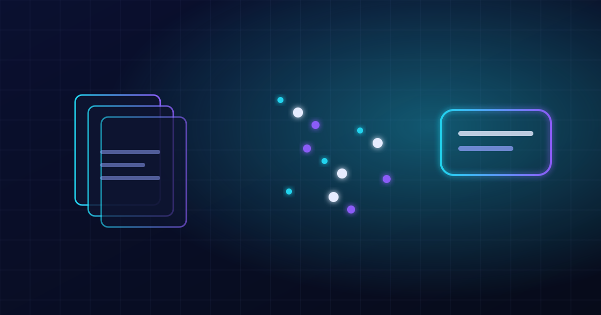

Generative AI
RAG: Membuat Chatbot yang Menjawab dari Dokumen Perusahaan Anda
Model bahasa besar sering menjawab dengan yakin tetapi keliru. Retrieval-Augmented Generation (RAG) menambatkan jawaban pada dokumen milik Anda sendiri.
- Rina Siregar
- 7 menit baca